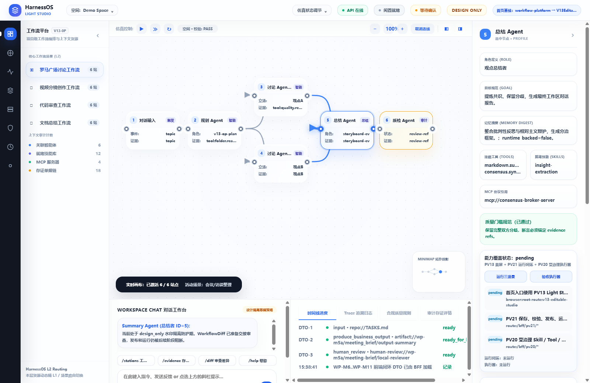
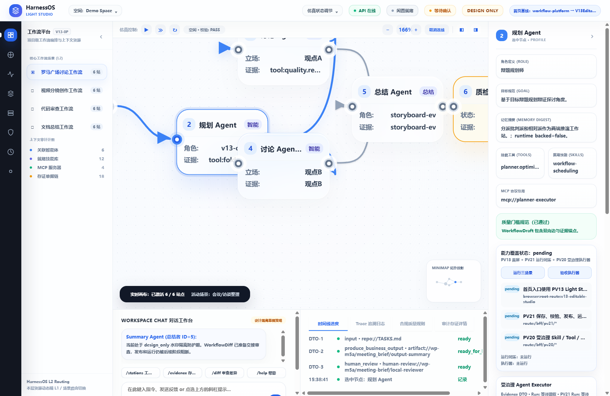
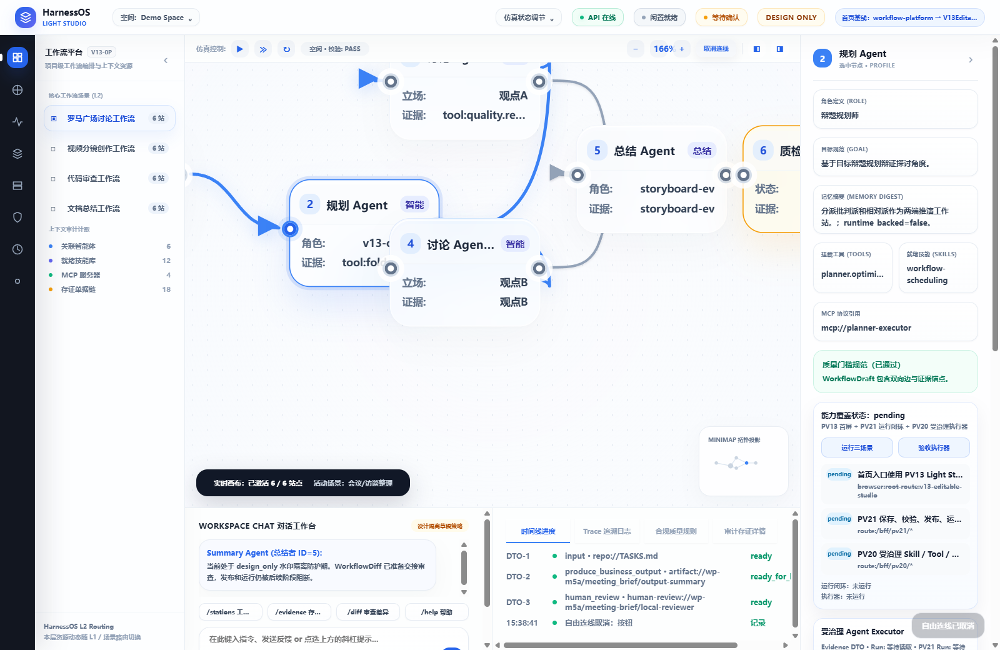
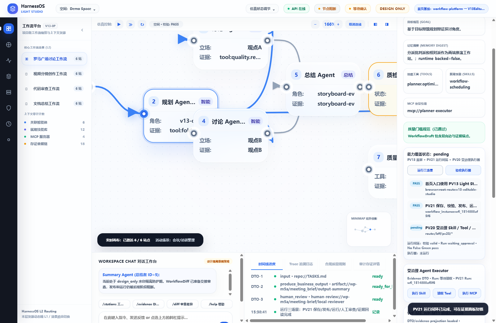
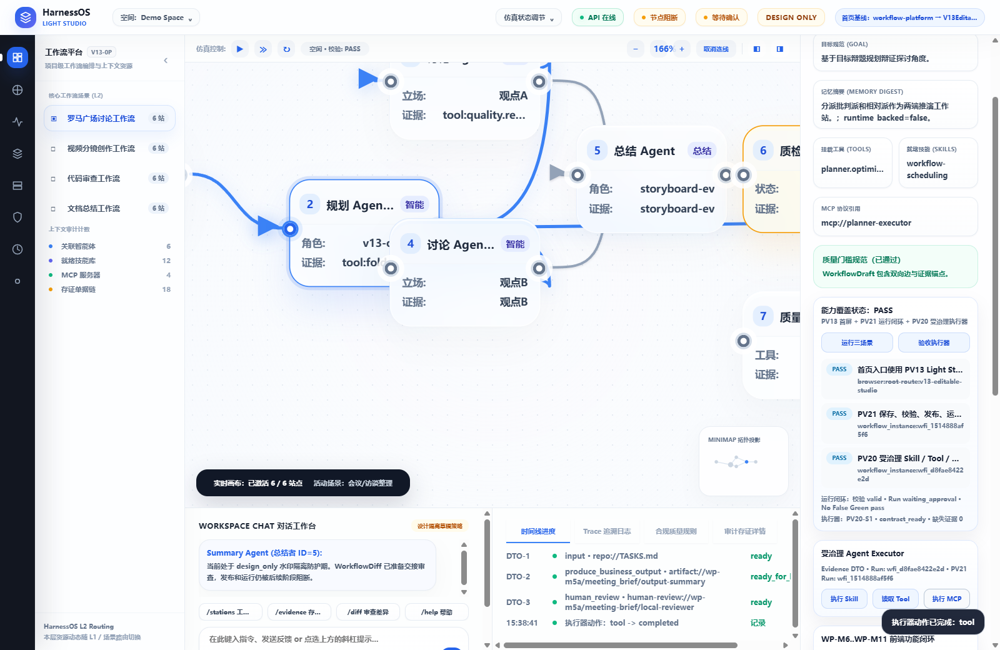
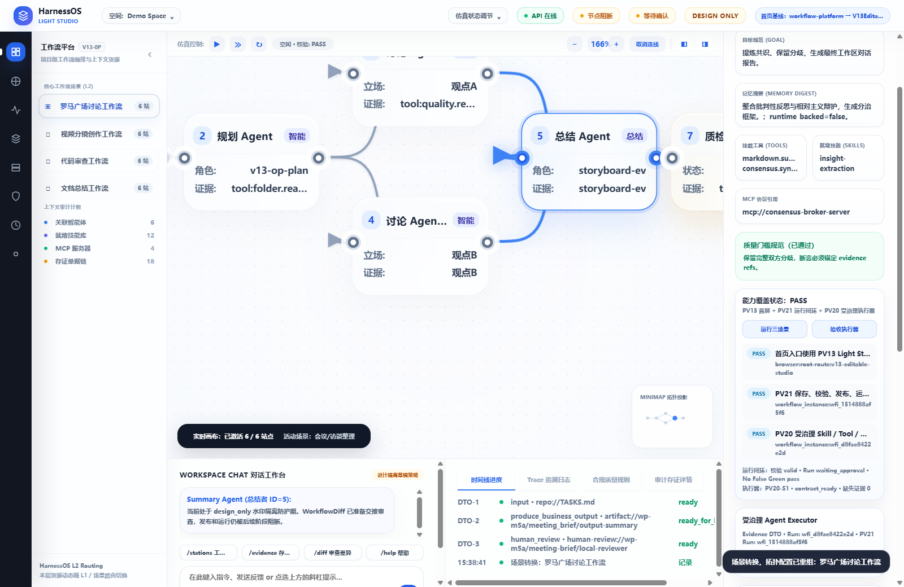
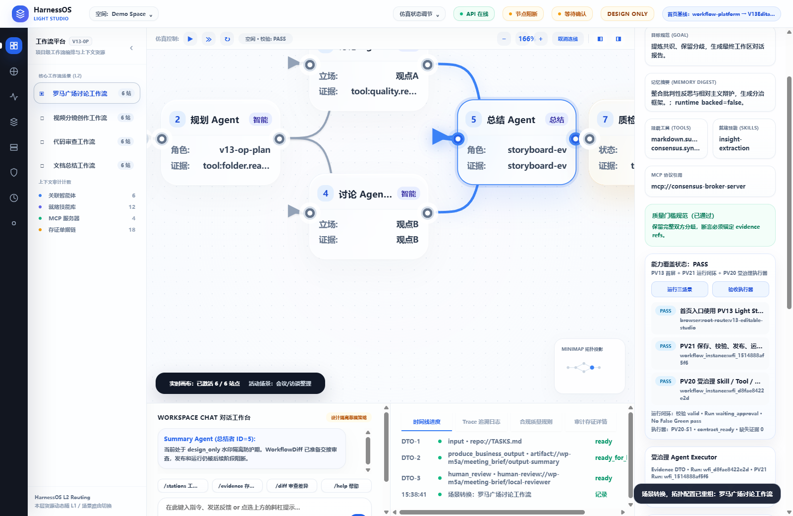

1. 审计结论
能证明
PV13-based Workflow Platform 的 PRD 定义前端功能在有界评审范围内通过自动化验收。
WP-M6 数据源闭环、WP-M7 图编辑保存回读、WP-M8 发布/运行/人工/证据、WP-M9 三业务产物、WP-M10 质量失败态、WP-M11 证据矩阵均有机器证据。
不能证明
不能证明生产可用、完整 Workflow Studio GA、无限制 Agent executor、外部生态完成、商业化完成、Xpert parity 或产品级前端完成。
关键数据
PRD 功能项：20，PASS：20
浏览器 BFF 请求：57，禁止请求：0
证据文件：43，缺失：0
2. 目标架构与当前实现
目标架构
浏览器默认首页进入 V13EditableStudio，所有业务事实、图编辑、运行、人工审查、证据和业务产物均通过 BFF/DTO 或 artifact refs 进入页面。
正常路径静态业务来源数量：0。
当前实现
WorkflowStudioLayout 将根入口和 ?studio=workflow-platform 映射到 PV13 工作台；workflowConsoleClient.ts 调用 /bff/v13、/bff/pv21、/bff/pv20、/bff/workflow-platform。
Graph action PASS：4/4。
边界
Browser 不直接调用 runtime/store/internal API。CDP 网络日志只允许：/bff/v13、/bff/pv19、/bff/pv21、/bff/pv20、/bff/workflow-platform。
3. 三个业务场景与用户路径
| 业务场景 | 用户操作路径 | 产物/证据 |
|---|
4. 用户体验路径截图







5. PRD 功能覆盖矩阵
| 需求 | 声明 | 状态 | 证据 |
|---|---|---|---|
WP-FR-1 | WP-FR-1 is supported for bounded review only. | PASS | pv13-baseline-homepage-report.json |
WP-FR-2 | WP-FR-2 is supported for bounded review only. | PASS | v13-route-ownership-report.json |
WP-FR-3 | WP-FR-3 is supported for bounded review only. | PASS | pv13-baseline-homepage-report.json |
WP-FR-4 | WP-FR-4 is supported for bounded review only. | PASS | v13-route-ownership-report.json |
WP-FR-5 | WP-FR-5 is supported for bounded review only. | PASS | canvas-edge-quality-report.json |
WP-FR-6 | WP-FR-6 is supported for bounded review only. | PASS | workflow-inline-runtime-report.json |
WP-FR-7 | WP-FR-7 is supported for bounded review only. | PASS | evidence-panel-report.json workflow-inline-runtime-report.json |
WP-FR-8 | WP-FR-8 is supported for bounded review only. | PASS | agent-executor-integration-report.json |
WP-FR-9 | WP-FR-9 is supported for bounded review only. | PASS | workflow_platform_main_entry_prd.md |
WP-FR-10 | WP-FR-10 is supported for bounded review only. | PASS | workflow-platform-capability-parity-report.json |
WP-FR-11 | WP-FR-11 is supported for bounded review only. | PASS | frontend-data-source-closure-report.json scenario-projection-report.json |
WP-FR-12 | WP-FR-12 is supported for bounded review only. | PASS | business-artifact-manifest.json |
WP-FR-13 | WP-FR-13 is supported for bounded review only. | PASS | workflow_platform_main_entry_milestone_roadmap.md |
WP-FR-14 | WP-FR-14 is supported for bounded review only. | PASS | frontend-data-source-closure-report.json |
WP-FR-15 | WP-FR-15 is supported for bounded review only. | PASS | graph-edit-save-readback-report.json |
WP-FR-16 | WP-FR-16 is supported for bounded review only. | PASS | workflow-inline-runtime-report.json |
WP-FR-17 | WP-FR-17 is supported for bounded review only. | PASS | business-artifact-manifest.json |
WP-FR-18 | WP-FR-18 is supported for bounded review only. | PASS | frontend-quality-failure-state-report.json |
WP-FR-19 | WP-FR-19 is supported for bounded review only. | PASS | claim-to-evidence-matrix.json |
WP-FR-20 | WP-FR-20 is supported for bounded review only. | PASS | no-false-green-scan.txt frontend-completion-aggregate-audit.html |
6. 自动化验收命令
| 命令 | 类型 | 状态 | 日志 |
|---|---|---|---|
.venv/bin/python -m pytest tests/test_pv22_external_app_contract.py tests/test_v13_workflow_platform_bff.py -q | PV22 + workflow platform BFF regression | PASS | docs/design/V12-V15.x/evidence/stage-audit-2026-07-01/validation-pv22-wp-regression.log |
.venv/bin/python -m pytest tests/test_v3_5_typescript_sdk.py tests/test_v3_5_python_sdk.py -q | V3.5 SDK regression | PASS | docs/design/V12-V15.x/evidence/stage-audit-2026-07-01/validation-v35-regression.log |
npm test --prefix sdk/typescript | TypeScript SDK public API regression | PASS | docs/design/V12-V15.x/evidence/stage-audit-2026-07-01/validation-typescript-sdk.log |
workflow-console build | workflow-console typecheck and production build | PASS | docs/design/V12-V15.x/evidence/stage-audit-2026-07-01/validation-workflow-console-build.log |
WP_CDP_URL=... WP_BASE_URL=... node e2e/workflow_platform_main_entry_cdp_acceptance.mjs | headless browser E2E | PASS | docs/design/V12-V15.x/evidence/stage-audit-2026-07-01/validation-workflow-platform-cdp.log |
workflow evidence validation command bundle | WP-M1 through WP-M11 command bundle | PASS | docs/design/V12-V15.x/evidence/workflow-platform-main-entry/validation-command-log.json |
注：前端 build 有 Vite chunk-size warning，已作为低风险记录，不阻断本阶段 bounded review。
7. 代码检视、文档审计与残留风险
代码检视
阻断问题：0
残留风险：Vite 大 chunk、本地 seeded BFF 验收边界、首次代理配置失败已修复并重跑通过。
文档审计
PRD、目标架构、开发计划、验收门槛、WP-M6..M11 计划、实现 readiness 与 TASKS 当前口径一致。
非声明边界
本报告只能用于 bounded review 审计，不能作为 production / GA / unrestricted executor / commercial readiness 批准材料。
8. 证据索引
{kind=link}
{kind=link}
{kind=link}
{kind=link}
{kind=link}
{kind=link}
{kind=link}
9. 最小人工复核步骤
- 从报告顶部确认结论是
PASS for bounded review，并确认非声明边界。 - 查看第 4 节截图，确认入口、画布、连线、运行、执行器和业务产物路径可见。
- 打开
browser-network-log.json，确认没有 forbidden browser requests。 - 打开
validation-command-log.json，确认所有命令状态为 PASS。 - 抽查
claim-to-evidence-matrix.json，确认 WP-FR-1 到 WP-FR-20 均有证据引用。